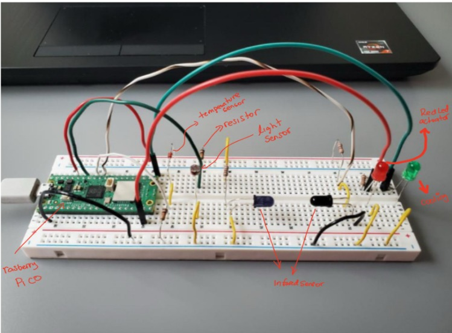
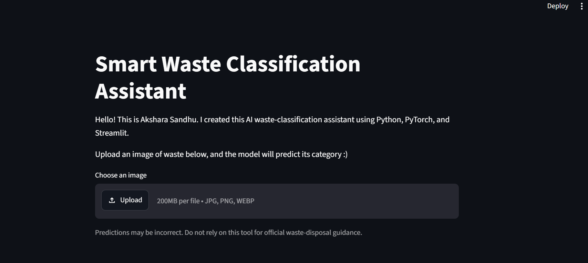
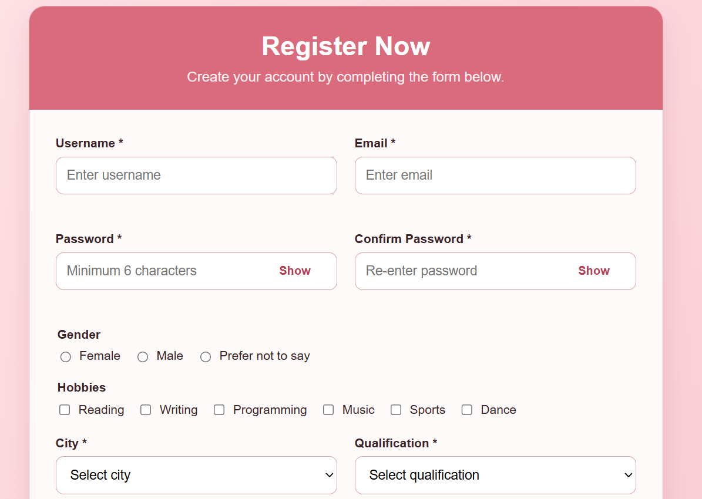

Temperature-Regulating Hospital System
A hospital-room temperature monitoring concept designed to adjust air conditioning based on environmental readings and day/night conditions. I focused on the interface, usability, and clear technical communication.

Smart Waste Classification Assistant
A six-class waste image classifier built with transfer learning and a pretrained ResNet18 model. I trained and evaluated the model, then created a Streamlit interface that displays predictions, confidence scores, and low-confidence warnings.
Personal Portfolio Website
A responsive personal website built to present my work in a more visual, project-first way. I designed the layout, styling, navigation, and deployment using GitHub Pages.

User-Centered Registration Form
A responsive multi-field registration form designed with clear labels, accessible spacing, and a clean visual hierarchy. The project focuses on usability, structure, and basic form validation.